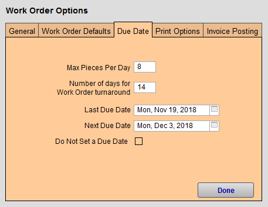

Set Up Work Order Due Date Option
FrameReady is able to help you pick due dates for Work Orders. If you add in your shop's production days, production turnaround time and the maximum pieces per day, then FrameReady can do all the math for you.
How to open the Work Order Options
-
On the Main Menu, in the Work Orders section, open the Options tab.
-
Click the More Options... button.
-
Open the Due Date tab.
Work Order Options Due Date tab Explained

Maximum Pieces Per Day Field
-
The maximum number of pieces your shop wishes to handle on any given day, for example 8 pieces.
-
When that maximum number has been reached, then the due date rolls over to the next available date.
-
If Max Pieces Per Day is left empty, then the Next Due Date is calculated based on the number of turnaround days (and ignores the Last Due Date).
Number of Days for Work Order Turnaround Field
-
Enter the Number of days for work order turn around, for example 14 days.
-
FrameReady automatically enters a date in the Due Date field of the Work Order -- based on the number of days specified here.
-
This number can be changed at any time without affecting previous/existing Work Orders.
-
If left blank, then the calculated due date will be the same as the creation date of the Work Order.
Last Due Date Field
-
This is the due date of the last, most-recent Work Order in your FrameReady.
-
It is calculated by FrameReady based on Maximum Pieces Per Day field (above).
-
When the maximum number of pieces is met, then the Next Due Date automatically rolls over to the next available due date - taking into consideration the business days open and any exceptions listed in the Add Excluded Date feature.
Tip: If your shop is going to be closed for a short duration (or you can’t handle any more orders before Christmas), then you can use this field to enter the first available date your business will be open. This date will be used as the due date and will still adhere to the maximum number of pieces per day.
Next Due Date Field
-
The due date that FrameReady is prepared to assign to a new Work Order (if you were to click New Work Order).
-
FrameReady uses these four factors to calculate this date:
-
the number of turnaround days,
-
the maximum number of pieces per day,
-
the last due date,
-
and which business days you have marked as open.
-
-
If Max Pieces Per Day is left empty, then the Last Due Date is ignored and the Next Due Date is calculated based on the number of turnaround days.
Do Not Set a Due Date Field
-
Check Do Not set a Due Date box if you want no due date on the Work Order.
Options for Calculating the Work Order Due Date
FrameReady is able to help you pick due dates for your Work Orders. If you add in your shop's production days, production turnaround time and the maximum pieces per day, then FrameReady can do all the math for you.
-
Enter the Maximum number of pieces your shop wishes to handle on any given day, for example 8 pieces.
-
Enter the Number of days for work order turn around, for example 14 days.
This number can be changed at any time without affecting previous Work Orders. If left blank, the due date will be the same as the creation date of the Work Order. -
Last Due Date (i.e. the due date of the last Work Order) is calculated by FrameReady based on maximum pieces per day. When the maximum number of pieces is met, the Next Due Date automatically rolls over to the next available due date - taking into consideration the business days open.
Tip: If your shop is going to be closed for a short duration (or you can’t handle any more orders before Christmas), then use the Last Due Date field to enter the first available date your business will be open. That date will be used as the due date and will still adhere to the maximum number of pieces per day.
-
Next Due Date (i.e. the due date that the next work order will be given) evaluates four factors: the number of turnaround days; the maximum number of pieces per day; the last due date; and which business days you have marked as open.
If Max Pieces Per Day is left empty, then the Last Due Date will be ignored and the Next Due Date will be calculated based on the number of turnaround days. -
Check Do Not set a Due Date box if you want no due date on any Work Orders.
-
Click Done to return to the Main Menu, or select another tab.
© 2023 Adatasol, Inc.